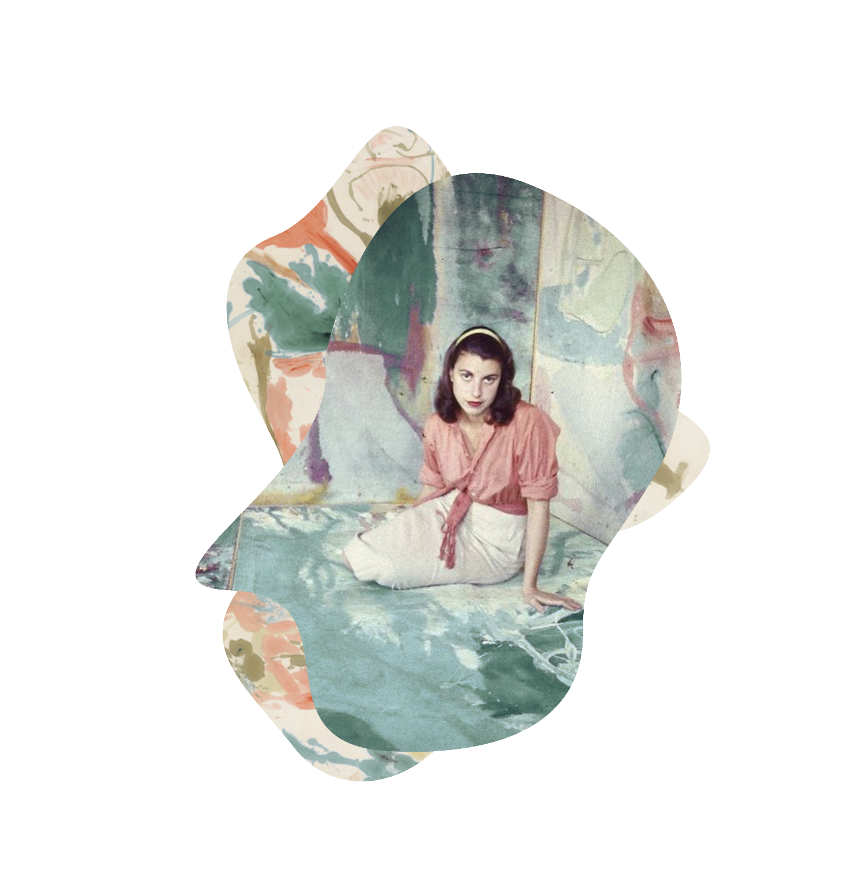

After LIFE featured Jackson Pollock in
1946, the message seemed clear: Abstract
Expressionism, which hoped to connect
more directly to a primal sense of artistic
purpose, is for tough, complicated men to
pour their expressive force into large
paintings with urgent, even violen gestures.
By contrast, in her LIFE shoot, Frankenthaler
sits calmly with her legs politely folded under
her. She is perched on one of her paintings,
laid horizontally on the floor. Where Pollock
is positioned to dominate his single, hung
painting, Frankenthaler is surrounded in
every direction by more of her paintings,
engulfed by soft swaths of paint. @a___f______
